3 - Migraciones y Modelos
Introducción
Enlace tutorial: 3 Migraciones Modelos
Recuerda: Cuando comentemos algún archivo, siempre es bueno indicar la ruta
✅ Marcas De Tiempo
0:00:00 - Introducción 0:00:55 - Configuración De La Capa De Persistencia 0:23:37 - Migraciones 0:45:17 - Rollbacking 1:03:09 - Modelos 1:24:29 - Conclusiones
Introducción
El video trata sobre Curso Profesional De LARAVEL: Episodio 3 - Migraciones Y Modelos pero también intenta abordar el siguiente tema:
Uso de Migraciones Modelos en Detalle Herramientas LARAVEL.
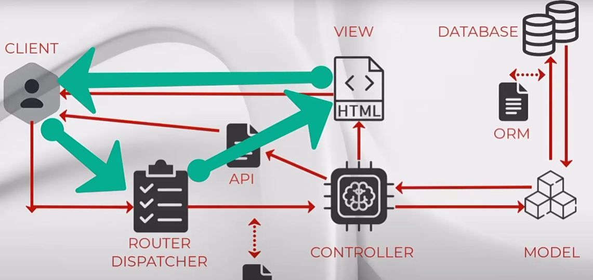
Configuración De La Capa De Persistencia
0:00:55 - Creamos un nuevo proyecto llamado modeldata, vamos a centrarnos en el modelo y en la base de datos
Si creamos el proyecto con laravel new, que nos pide más opciones, lo creamos sin starter kit (none)
laravel new modeldata
INFO Application key set successfully.
Corremos las migraciones iniciales y luego vemos para qué sirven.
Would you like to run the default database migrations? (yes/no) [yes]: NO
El sistema de persistencia debe ser gestionado por Laravel a través del motor ORM
Necesitamos especificar en el .env a qué sistema vamos a conectar, en el tutorial lo hace con Mysql y nosotros con SQLite, todo esto se puede ver con mayor profundidad en /Config/database.php aunque a menos que queramos cambiar algo
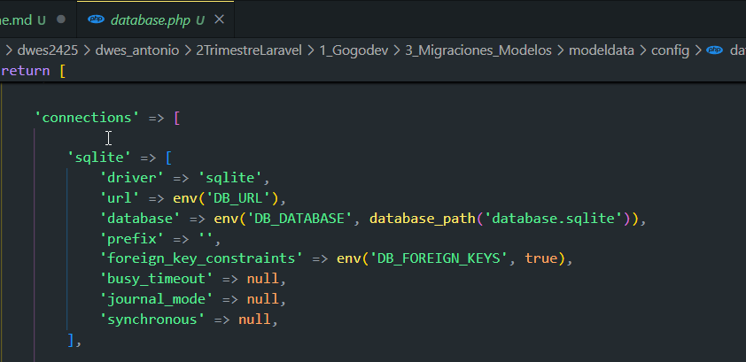
Si necesitamos otro sistema, necesitaríamos añadir el driver a este fichero de configuración.
Migrate
Comando para migrar todas nuestras migraciones
php artisan migrate
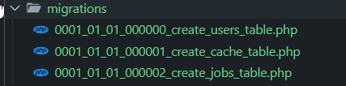
Con lo que se crean todas las tablas que le hemos indicado, que son las que vienen por defecto.
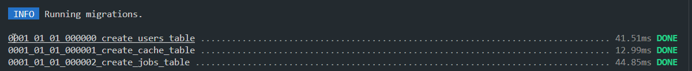
Y que si pulsamos ahora sobre database.sqlite, las veremos, 10 tablas:
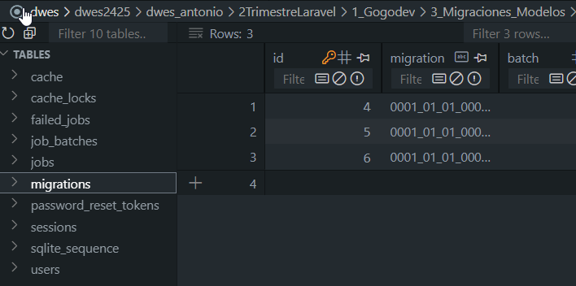
Si vuelvo a ejecutar el comando migrate, Laravel ya sabe que no tiene nada que migrar:
INFO Nothing to migrate.
Hasta aquí, ya hemos configurado la estructura de nuestras tablas y la configuración a la base de datos.
Migraciones
0:23:37 -
Ahora vamos a crear nosotros un fichero para crear la estructura de nuestro objeto. Necesitaremos un archivo de migración para que nos cree la tabla necesaria.
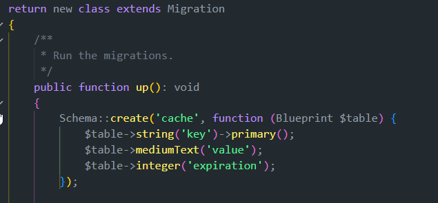
php artisan make:migration nombre_migracion_table
El comando para crear migraciones se ejecuta con make, un comando que usaremos mucoh de aquí en adelante.
php artisan make:migration create_notes_table
Y si todo ha ido bien: INFO Migration [C:\xampp\htdocs\...modeldata\database\migrations/2025_01_10_173622_create_notes_table.php] created successfully.
Con lo que crea el fichero para crear la tabla notes
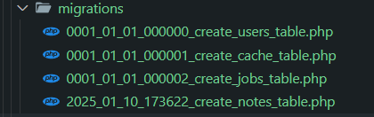
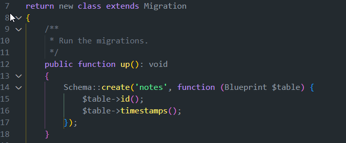
El archivo genera una clase que extiende de la clase Migration con dos métodos
- up: Info para crear la tabla
- down: info para borrar esa migración y hacer rollback
Clase schema
La clase schema puede crear todos los elementos de la tabla.
- create
- table
- dropIfExists
- 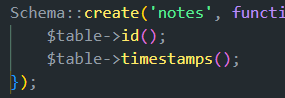
nomenclatura de las tablas
Es IMPORTANTE que para que funcione bien automatizado las tablas se escriban en plural y todo en minúscula:
Así, la función create recibe dos argumentos: notes y function
Blueprint es una clase que contiene todos los métoodos para generar la estructura de la tabla
- Por defecto nos añade dos campos: id y timestamps.
Vamos a agregar algunos campos para nuestras notas:
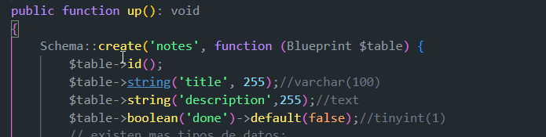
Además, a cada una de los campos que hemos creado, podemos añadirle más condiciones, y esto se hace de la siguiente forma encadenando métodos.
Por ejemplo que pueda ser nulo (ya que por defecto son requeridos)
$table->string('description',255)->nullable();//text
$table->boolean('done')->default(false);//tinyint(1)
Como hemos creado una migración que hemos hecho anteriormente, tenemos que volver a migrarla para que se migre a la base de datos.
php artisan migrate
INFO Running migrations.
2025_01_10_173622_create_notes_table ............................................................................... 68.16ms DONE
Y si vemos, podemos encontrar la nueva tabla notes y en la tabla migrations vemos que hay un nuevo lote:
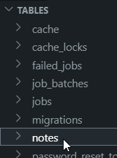 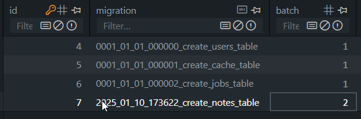
Rollbacking
0:45:17 -
Imaginemos que nos damos cuenta que algún campo se nos ha olvidado o debemos cambiar.
1- Lo que NO se debe hacer:
Tocar las tablas directamente en la base de datos. No demos manipular el sistema de datos.
2- Rollback
Es la que usaremos la mayoría de veces, más directa, haciendo rollback.
- Si vemos la tabla migrations de nuestra base de datos, vemos el lote 2 con la última migración
- Si lo quiero tirar para atrás
php artisan migrate:rollbackINFO Rolling back migrations.2025_01_10_173622_create_notes_table ...................................................... 5.06ms DONE- 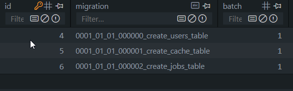
- El lote 2 ha desaparecido y la tabla notes ha dejado de existir, ahora puedo hacer lo que quiera,
- añado campo deadline y hago
php artisan migrate - 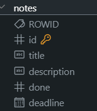
- Hemos realizado una manipulación correcta del proceso de migración
- Ha usado la función down al hacer el rollback.
Otros tipos de rollback, hay muchos pero los más comunes son:
php artisan migrate:resetpara borrar todas las migracionesphp artisan migrate:rollback --batch=1php artisan migrate:refreshpara borrar las migraciones y volver a migrar
3- Update table
Algunas veces, cuando si hacemos rollback perdemos mucho de lo realizado como claves, relaciones, etc.
Estas modificaciones nos interesará generar nuevo archivo de migración para ACTUALIZAR la estructura de una tabla y NO para crearla
php artisan make:migration update_notes_table
Y genera un nuevo archivo de migración:
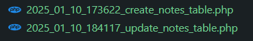
Ahora, en nuestro schema, en vez de create vamos a usar la función table (para modificar la tabla ya creada)
Tenemos que tener en cuenta que en el down ya no vamos a tirar la tabla entera si no que debemos realizar lo contrario que en el up
El archivo update_notes_table queda:
<?php
use Illuminate\Database\Migrations\Migration;
use Illuminate\Database\Schema\Blueprint;
use Illuminate\Support\Facades\Schema;
return new class extends Migration
{
/**
* Run the migrations.
*/
public function up(): void
{
Schema::table('notes', function (Blueprint $table) {
$table->string('author');// tras la migracion se añade la columna author
//tambien se puede eliminar una columna:
$table->dropColumn(['deadline']); //arrau con las columnas a eliminar
});
}
/**
* Reverse the migrations.
*/
public function down(): void
{
Schema::table('notes', function (Blueprint $table) {
$table->dropColumn(['author']);
//$table->date('deadline'); // no es necesario ya que en el down de la primera migracion se elimina la tabla
});
}
};
En el video ELIMINA este archivo y no lo ejecuta, pero si queremos ejecutar la migración vemos como cambia estas columnas:
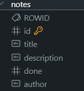
Tras comprobar, borro el archivo migrate y hago refresh.
PASOS para crear la migración vistos
- Paso 1. copia y pega .env y configura la base de datos, nuestro caso más fácil con sqlite
- Paso 2. Ejecuta el comando php artisan migrate (estructura en tu sistema)
Hasta ahora, hemos hecho la base de datos, pero vamos a trabajar a través de modelos y vamos a ver cómo se vinculan en la bbdd.
Modelos
1:03:09 -
Con el framework no nos preocupamos cómo y cuándo se guarda en la base de datos, trabajamos con clases y objetos a traves de modelos y de la persistencia de la base de datos se encarga el ORM Eloquent.
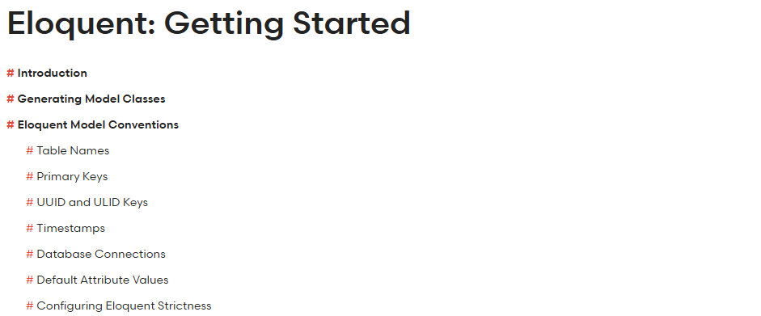
Generamos Modelos y aprendemos su vinculación con el sistema de persistencia.
Vamos a crear el modelo Note (IMPORTANTE convención los modelos en singular, en INGLÉS y con UpperCamelCase/PascalCase)
¿Cómo genero el modelo?
php artisan make:model Note
INFO Model [C:\xampp\htdocs\dwes\...\modeldata\app\Models\Note.php] created successfully.- 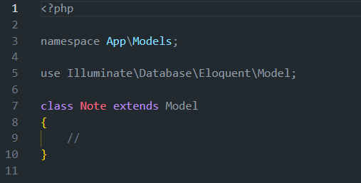
- ¿Qué es un modelo? Es una clase que extiende de la clase Model en POO, la que nos incluirá todas las acciones que necesitemos.
- En Laravel 11, vemos como NO incluye la factory por defecto, lo veremos.
Flujo del modelo y convención nombre tabla:
En este punto, el modelo, si lo hemos escrito bien en inglés y en singular ya sabe que se apoyará en la micración create_notes_table para las operaciones de creación.
¿Pero si no respeto la convención de nombres?¿Cómo mapeo? imaginate que en tu empresa las tablas estan en español,
le indico en la tabla model: dentro del modelo así
class Note extends Model
{
//¿Pero si no respeto la convención de nombres?¿Cómo mapeo? imaginate que en tu empresa las tablas estan en español,
//le indico en la tabla model: dentro del modelo así
protected $table = 'notas';
}
Ahora mismo nos falta la parte de CONTROLLERs para que todo funcione a la perfección.
Hasta ahora, la clase Note es un modelo que trabaja con la tabla notes y trabajaremos con programación OO.
Fillable, Guard, Cast y Hidden
Vamos a aprender estos primeros valores del modelo.
Con table hacemos la vinculación al sistema de persistencia, que está hecho por defecto salvo que no se respete nombre.
- fillable, campos que podrán cumplimentarse
- Hay campos que no queremos permitir que se cumplimenten, por ejemplo el ID
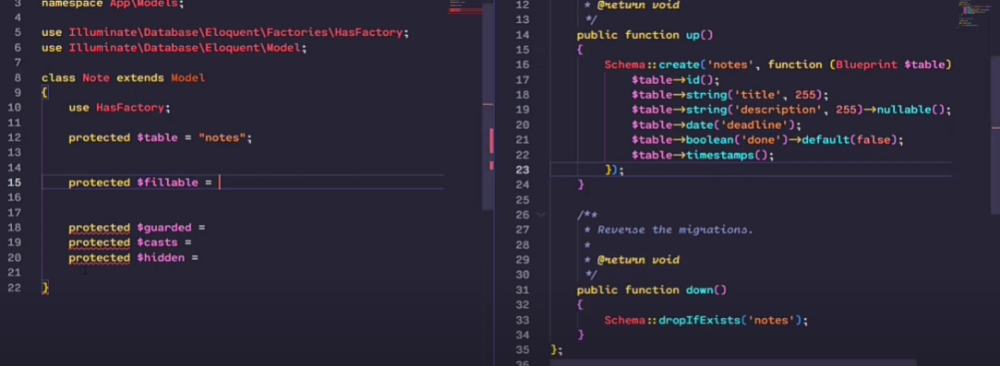
- guard, al contrario que fillable, son los datos que NO van a poder ser cumplimentados
- No es necesario definirlos ambos, son contrapuestos
- Si defino fillable, guard son el resto
- Si defino guard, fillable va a ser el resto de campos
- cast, para forzar que en el deadline sea una fecha, por ejemplo.
- hidden, para evitar enviar datos para serializar, por ejemplo hacemos api y en el modelo user no queremos enviar el password, aunque esté encriptado, ya que no es seguro.
Así, hemos dejado nuestro modelo:
class Note extends Model
{
//¿Pero si no respeto la convención de nombres?¿Cómo mapeo? imaginate que en tu empresa las tablas estan en español,
//le indico en la tabla model: dentro del modelo así
//protected $table = 'notas';
pr
Atajos en la creación
Si pensamos, hemos hecho la migración y después el modelo.
Ahora, vamos a hacerlo de una tacada, creando el modelo y su migración, creamos un ejemplo Author_ y observamos como crea el modelo y su migración, con lo que evitamos errores en la nomenclatura de la tabla y archivos.
php artisan make:model Author --migration
INFO Model [C:\xampp\htdocs\dwes\...modeldata\app\Models\Author.php] created successfully.
INFO Migration [C:\xampp\htdocs\dwes\...modeldata\database\migrations/2025_01_11_052813_create_authors_table.php] created successfully.
Modelo Author: 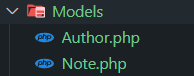 Migración: 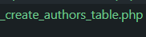
En la documentación de Laravel vienen todas las opciones:
If you would like to generate a database migration when you generate the model, you may use the --migration or -m option:
php artisan make:model Flight --migration
You may generate various other types of classes when generating a model, such as factories, seeders, policies, controllers, and form requests. In addition, these options may be combined to create multiple classes at once:
# Generate a model and a FlightFactory class...
php artisan make:model Flight --factory
php artisan make:model Flight -f
# Generate a model and a FlightSeeder class...
php artisan make:model Flight --seed
php artisan make:model Flight -s
# Generate a model and a FlightController class...
php artisan make:model Flight --controller
php artisan make:model Flight -c
# Generate a model, FlightController resource class, and form request classes...
php artisan make:model Flight --controller --resource --requests
php artisan make:model Flight -crR
# Generate a model and a FlightPolicy class...
php artisan make:model Flight --policy
# Generate a model and a migration, factory, seeder, and controller...
php artisan make:model Flight -mfsc
# Shortcut to generate a model, migration, factory, seeder, policy, controller, and form requests...
php artisan make:model Flight --all
php artisan make:model Flight -a
# Generate a pivot model...
php artisan make:model Member --pivot
php artisan make:model Member -p
Conclusiones
1:24:29 -
En el tutorial anterior vimos vistas estáticas
En este hemos creado migraciones y modelos, nos falta ver el controlador para unir las dos anteriores.
rutas
Recuerda: Cuando comentemos algún archivo, siempre es bueno indicar la ruta